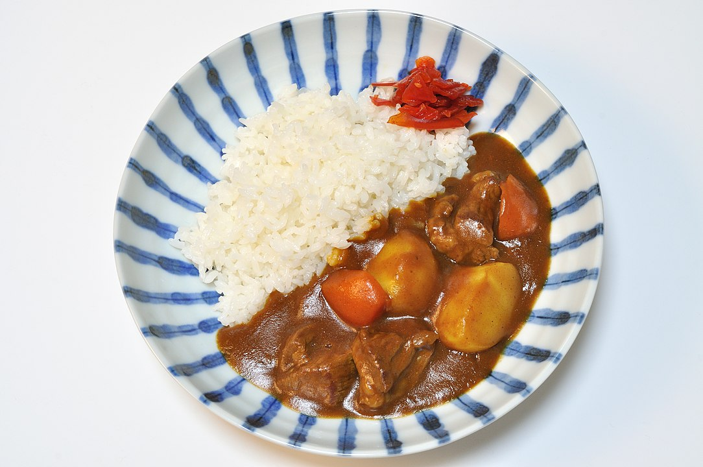

Japanese curry

Description
Japanese curry or "kare raisu" (カレーライス), is a popular and comforting dish in Japan. It consists of a flavourful and thick curry sauce, served over steamed white rice. The curry sauce typically includes a mixture of vegetables (such as onions, carrots, and potatoes) and meat (commonly chicken, beef, or pork). The sauce is mildly spicy and slightly sweet, made from a roux that includes curry powder and other spices, often available in convenient curry cubes. Japanese curry rice is usually garnished with pickled vegetables called "fukujinzuke" and can be enjoyed as a hearty meal.
Ingredients
- Chicken or Beef (200g, diced)
- Potatoes (2 medium, peeled and chopped)>
- Carrots (2 medium, peeled and chopped)
- Onion (1 large, sliced)
- Japanese curry roux (4 cubes or as per package instructions
- Cooked white rice (4 servings)
Steps
- In a large pot, sauté the onions until they are soft and translucent.
- Add the chicken or beef and cook until browned.
- Add the potatoes and carrots, then add enough water to cover the ingredients.
- Bring to a boil, then reduce heat and simmer until vegetables are tender.
- Add the curry roux cubes, stirring until they dissolve and the sauce thickens.
- Spoon the cooked white rice onto plates.
- Pour the curry mixture over the rice.
- Optionally, garnish with pickled vegetables like fukujinzuke.
Back to home